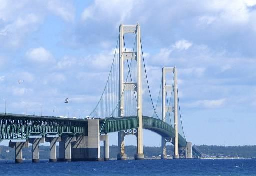

Michigan, the state that is known for looking like a mitten.
| Lake | Water Volume (cu mi) | Average Depth (ft) | Surface Area (sq mi) |
|---|---|---|---|
| Lake Erie | 116 | 62 | 9,910 |
| Lake Huron | 850 | 195 | 23,000 |
| Lake Michigan | 1,180 | 279 | 22,300 |
| Lake Ontario | 393 | 283 | 7,340 |
| Lake Superior | 2,900 | 483 | 31,700 |
The Great Lake State
Can you name the 5 Great Lakes? Here they are ranked by surface area largest to smallest.
- Lake Superior: It get's it's name for a reason.
- Lake Huron: It's connected to Lake Michigan is that cheating?
- Lake Michigan: The only Great Lake that ONLY touches U.S soil.
- Lake Erie: Erie get's some of it's water from the Detroit river.
- Lake Ontario: Smallest by surface area but it is deeper than it's neighbor Lake Erie.